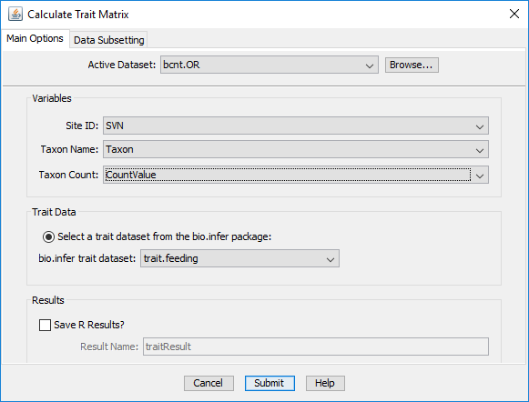

CADStat: Statistical Tools for Causal Analysis
Calculating
Trait Metrics
Introduction
This module calculated trait metrics from biological data.
Available traits include physical habits (e.g., clinger,
sprawler, etc.) and feeding habits (e.g., shredder,
collected/gatherer). The tool summarizes biological data in
terms of three metrics for each trait class: relative
abundance, relative richness, and richness. For example,
selecting the physical habitat trait file will return a data
frame with the relative abundance, relative richness, and
richness of clingers, sprawlers, and other physical habits in
the data.
The module is initiated by choosing Analysis Tools ->
Calculate Trait Metrics from the menus. A dialog box should appear as follows:

Input files
Active Dataset: This file is a data frame that
contains observations of benthic macroinvertebrate. The file
can be selected from the working directory or loaded using the
Browse option. At least three columns are required
in this data frame: (1) a unique sample identifier (specified
by selecting the appropriate field in Site ID:, (2)
taxon names (specified in Taxon Name, and (3) the
number of individuals of a particular taxon within a
particular sample (Taxon Count).
Coefficient data: Select a file with species traits
Two trait files are
currently available: physical habit
(trait.habit) and feeding habit (trait.feeding).
Output file
Results: Select this option to save the results of
the script in a separate variable in the current workspace.